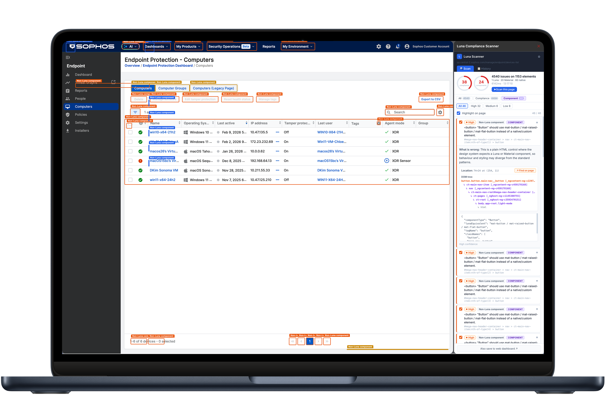
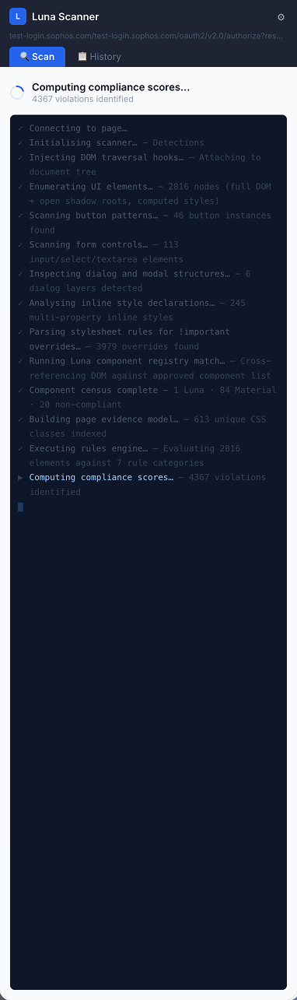

A Chrome extension that scans live and development builds of Sophos Central, cross-checks UI implementation against the frontend repository, and scores compliance with Luna, the Sophos design system.

Design System Compliance Scanner is a Chrome extension I built in Cursor to close the gap between design-system intent and what actually ships in Sophos Central. Luna is the Sophos design system, and the scanner inspects a live page or development build to check whether the rendered UI is using Luna components and approved implementation patterns.
It identifies the UI elements being rendered, cross-checks that implementation against the frontend UI repository, and produces a compliance score for both design quality and component usage. It highlights non-Luna or non-compliant elements directly on the page, then provides evidence in the extension panel so teams can understand what is wrong, where it appears, and which Luna pattern should be used instead.
The aim is not to create another governance checklist. It is to make compliance visible at the point of build, where engineers, designers, and PMs can act on it before drift becomes expensive to unwind.
Large enterprise products accumulate UI drift quietly. A native button replaces a Luna design-system button. A custom control behaves almost like the approved component. A page inherits older Material UI patterns that were never fully migrated. Each individual decision can look small, but together they weaken consistency, accessibility, maintainability, and customer trust.
Manual review was not enough. Designers could spot issues in screenshots or design reviews, but they could not continuously inspect every live or in-progress page. Engineers could search the repo, but visual and DOM-level drift was harder to connect back to the component system. We needed a way to inspect the product itself and link visible UI back to implementation evidence.

The extension injects traversal hooks into the current page so it can inspect rendered DOM, shadow roots, form controls, dialog structures, inline styles, and component markers in context.
Detected elements are matched against the Luna component registry and known frontend implementation patterns, separating approved design-system usage from native, custom, or legacy UI.
The scanner calculates design and component compliance scores, grouping findings by severity so teams can focus on the issues that create the most product risk.
Issues are highlighted directly on the page and documented in the panel with DOM context, source hints, and plain-language guidance on what needs to change.
The scanner identifies where approved Luna components are being used, where native controls have slipped in, and where custom patterns recreate functionality that already exists in the Sophos design system.
The extension looks for styling and structural signals that indicate divergence from the design system: inline style overrides, inconsistent control patterns, non-standard dialogs, and elements that are visually close but not system-compliant.
Findings are cross-referenced with frontend UI repository patterns so the tool is not just inspecting pixels. It connects what appears in the browser to the implementation model teams are expected to use.
Teams can identify compliance issues directly in the browser without waiting for a design review or manual audit.
Each finding gives engineers a concrete location and component-level recommendation, making design-system fixes easier to prioritise and implement.
Compliance becomes a score teams can track over time rather than a subjective judgement made late in delivery.
The tool reinforces Luna usage at the point where UI is built, reducing drift and helping the Sophos design system scale across a large product surface.